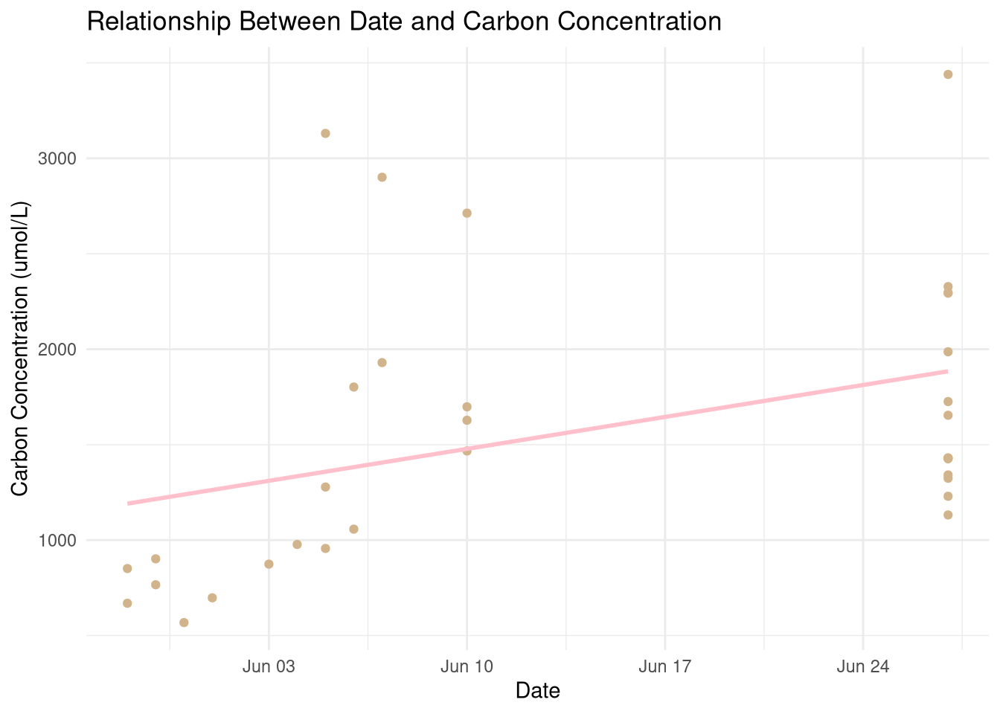
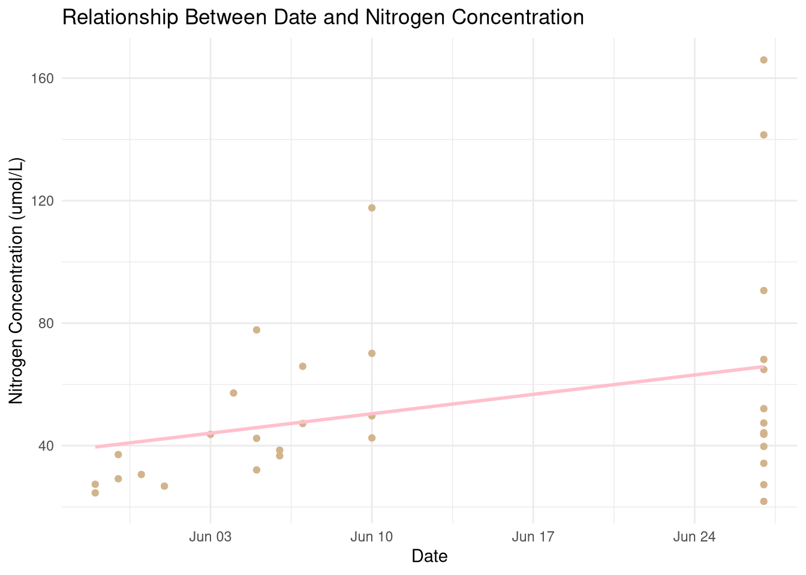
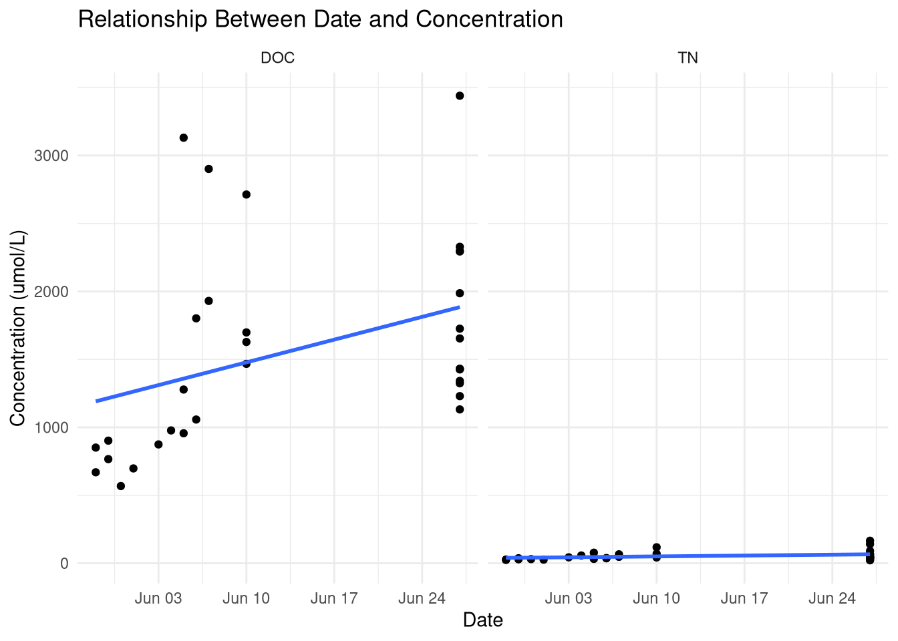
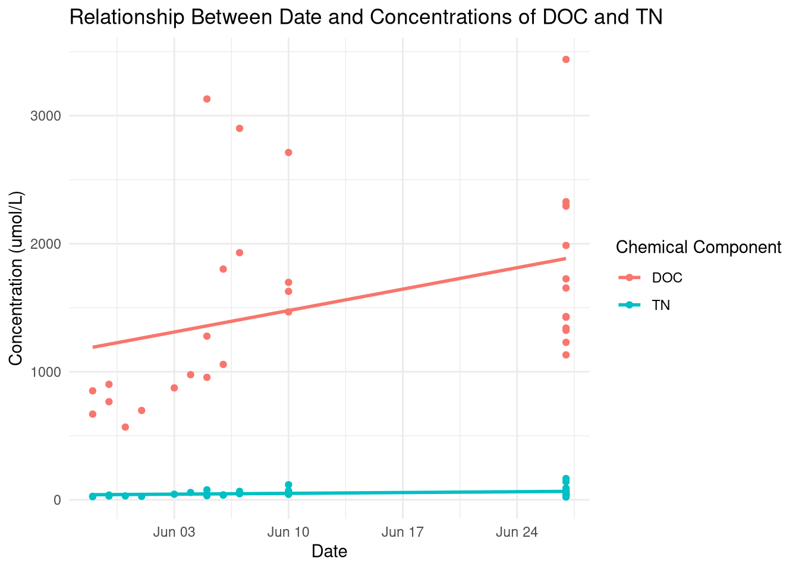
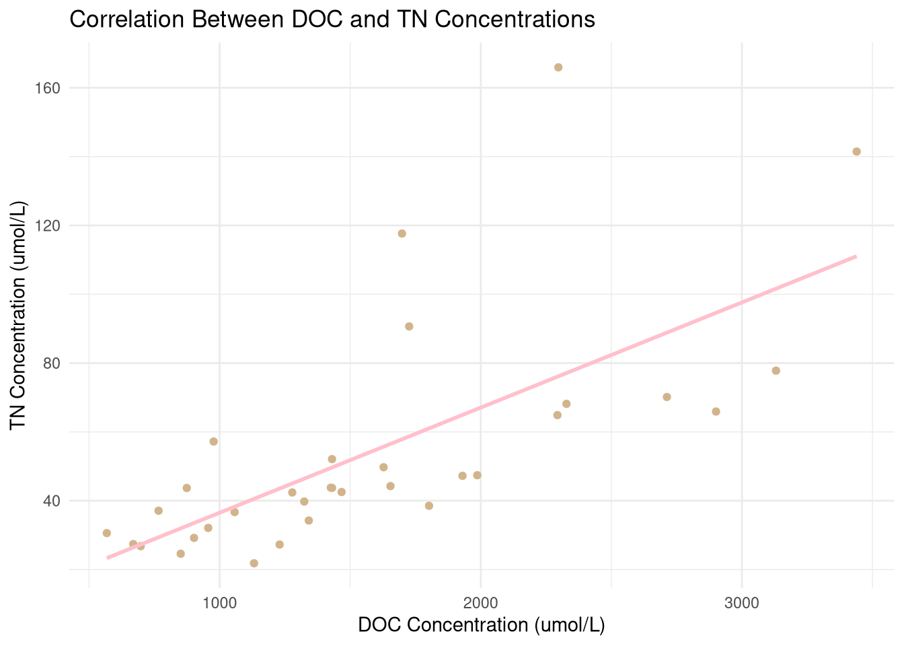
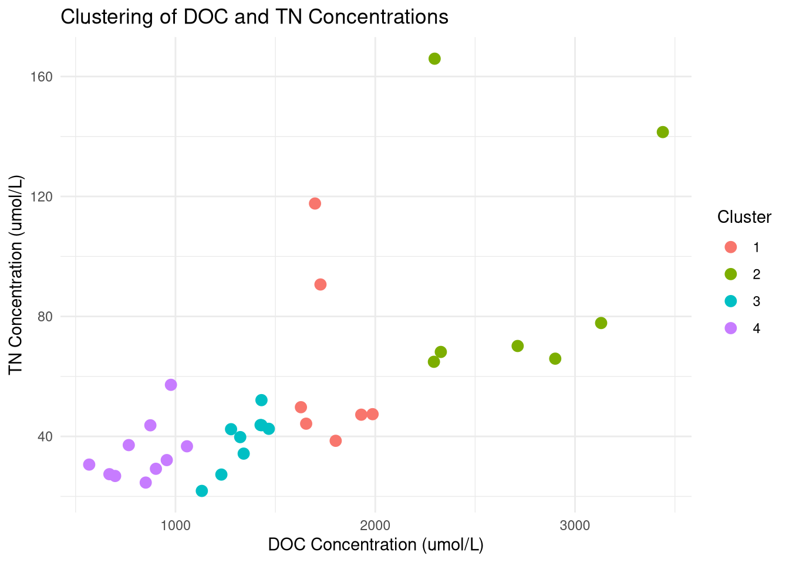

This is an exploration into the results of the geochemical analysis of samples of thawed permafrost from the Alaskan tundra during the summer months of 2024. Dozens of samples were transported from Alaska to Syracuse University for component analysis including total nitrogen and dissolved organic carbon content, which is what this project will focus on.
The machines used to take these measurements were the DOC/TOC Fusion and the TN Torch
Research Question
The questions that we want to ask and use data visualizations to figure out are:
Is there a relationship between when in the summer this data was recorded and the concentrations of chemical components
Is there a correlation between the concentrations of the two chemical components present in the samples
Are there any hidden relationships that can be uncovered through data visualizations
Install Packages
library(tidyverse)
── Attaching core tidyverse packages ──────────────────────── tidyverse 2.0.0 ──
✔ dplyr 1.1.4 ✔ readr 2.1.5
✔ forcats 1.0.0 ✔ stringr 1.5.1
✔ ggplot2 3.5.1 ✔ tibble 3.2.1
✔ lubridate 1.9.3 ✔ tidyr 1.3.1
✔ purrr 1.0.2
── Conflicts ────────────────────────────────────────── tidyverse_conflicts() ──
✖ dplyr::filter() masks stats::filter()
✖ dplyr::lag() masks stats::lag()
ℹ Use the conflicted package (<http://conflicted.r-lib.org/>) to force all conflicts to become errors
library(patchwork)library(ggplot2)library(dplyr)
Great! Now we can begin loading in the data sets. Lets use the “glimpse()” function to take a look at what each data set entails.
Now, we have “concentration” as our name to show the amount of carbon or nitrogen in the samples.
Let’s also make sure our “Date” is formatted correctly for visualizations.
DOC$Date <-as.Date(DOC$Date, format ="%m/%d/%Y")TN$Date <-as.Date(TN$Date, format ="%m/%d/%Y")
Great! The dates should be alright to work with now.
First, let’s take a look at how to answer the first research question. We need to look at what the relationship between the date that the recording was taken and the concentration of each chemical component is. Two graphs should be produced to demonstrate both carbon and nitrogen.
ggplot(DOC, aes(x = Date, y = concentration)) +geom_point(color ="tan") +geom_smooth(method ="lm", color ="pink", se =FALSE) +labs(title ="Relationship Between Date and Carbon Concentration",x ="Date",y ="Carbon Concentration (umol/L)" ) +theme_minimal()
`geom_smooth()` using formula = 'y ~ x'
#| label: fig-2#| fig-cap: "Line graph showing the relationship between date and nitrogen concentration."ggplot(TN, aes(x = Date, y = concentration)) +geom_point(color ="tan") +geom_smooth(method ="lm", color ="pink", se =FALSE) +labs(title ="Relationship Between Date and Nitrogen Concentration",x ="Date",y ="Nitrogen Concentration (umol/L)" ) +theme_minimal()
`geom_smooth()` using formula = 'y ~ x'

Figure 1: Line graph showing the relationship between date and carbon concentration.

Figure 2: Line graph showing the relationship between date and carbon concentration.
Now, we want to see what these look like on the same scale to get an idea of what sorts of concentrations we are looking at, relative to each other.
DOC$Type <-"DOC"TN$Type <-"TN"combined_data <-bind_rows(DOC, TN)#| label: fig-3#| fig-cap: "Line graphs showing the relationship between date and carbon and nitrogen concentrations."ggplot(combined_data, aes(x = Date, y = concentration)) +geom_point() +geom_smooth(method ="lm", se =FALSE) +facet_wrap(~ Type, ncol =2) +labs(title ="Relationship Between Date and Concentration",x ="Date",y ="Concentration (umol/L)" ) +theme_minimal()
`geom_smooth()` using formula = 'y ~ x'

Interesting to see that the concentrations of carbon that we are looking at are so high that they basically make nitrogen obsolete. Let’s look at them on the same axes.
DOC$Type <-"DOC"TN$Type <-"TN"combined_data <-bind_rows(DOC, TN)#| label: fig-4#| fig-cap: "Line graph showing the relationships between date and carbon and nitrogen concentrations."ggplot(combined_data, aes(x = Date, y = concentration, color = Type)) +geom_point() +geom_smooth(method ="lm", se =FALSE) +labs(title ="Relationship Between Date and Concentrations of DOC and TN",x ="Date",y ="Concentration (umol/L)",color ="Chemical Component" ) +theme_minimal()
`geom_smooth()` using formula = 'y ~ x'

This gives us the same result, but it is a bit easier to analyze.
1. It seems that there is a positive correlation between at what point in the warmer months the sample was taken and what concentration in umol/L there is present for both total nitrogen and dissolved organic carbon.
Now we can look to answer the second research question. We want to know if there is a correlation between the concentrations of the two chemical components present in the samples.
merged_data <-merge(DOC, TN, by ="Sample.ID", suffixes =c("_DOC", "_TN"))#| label: fig-5#| fig-cap: "Line graph showing the relationship between carbon concentration and nitrogen concentration."ggplot(merged_data, aes(x = concentration_DOC, y = concentration_TN)) +geom_point(color ="tan") +geom_smooth(method ="lm", color ="pink", se =FALSE) +labs(title ="Correlation Between DOC and TN Concentrations",x ="DOC Concentration (umol/L)",y ="TN Concentration (umol/L)" ) +theme_minimal()
`geom_smooth()` using formula = 'y ~ x'

There is a pretty clear correlation shown! Now we can answer the research question.
2. There is a positive correlation between the two chemical components.
Now, the last research question can be answered using data visualizations. The last question that we are answering is if any other patterns in the data can be uncovered using data visualizations.
Let’s try looking at the distribution of concentrations. Are the densities of the samples distributed pretty evenly? Are they clustered around any specific value?
Figure 3: Graph showing the density distribution of concentrations of each chemical component.
It looks like most of the values cluster around the lower limits of detection of their respective instruments. This may indicate reruns of the data could be required.
Now let’s take a look at where the data is clustered about in the graph of DOC and TN correlation. We can do this by merging the data, then taking the average of groups of data, then plotting the concentrations of the components against each other.
clustering_data <- merged_data[, c("concentration_DOC", "concentration_TN")]kmeans_result <-kmeans(clustering_data, centers =4)merged_data$Cluster <-as.factor(kmeans_result$cluster)#| label: fig-7#| fig-cap: "Graph showing the different clusters of data on the correlation graph."ggplot(merged_data, aes(x = concentration_DOC, y = concentration_TN, color = Cluster)) +geom_point(size =3) +labs(title ="Clustering of DOC and TN Concentrations",x ="DOC Concentration (umol/L)",y ="TN Concentration (umol/L)",color ="Cluster" ) +theme_minimal()

After some attempts at creating this graph, the best view was with 4 clusters. This really shows that the only portion of the data that is a bit strange is what is shown here as Cluster 4, where the values of TN are a bit higher than expected. Overall, this data doesn’t show us too much to dispute a fairly regular pattern of DOC/TN correlation.
After these plots have been run, we can answer Research Question 3.
3. Based on continued data analysis and exploration, it can be stated that the distribution of the correlations between DOC and TN are fairly normal throughout the dataset. Alternatively, the density distributions of the concentrations of each respective chemical component are a bit low, thus potentially indicating an error in the Total Nitrogen Torch machine and/or Dissolved Organic Carbon Fusion machine.
Conclusion
The data received from Alaska gave quantitative results that made mathematical sense and were distributed fairly normally, although some retesting may have to be done in order to ensure that the lower limit of detection is accurate. Between the months of May and June, the concentrations of Nitrogen and Carbon both increased over time, which also could indicate an error or a successfully identified pattern.